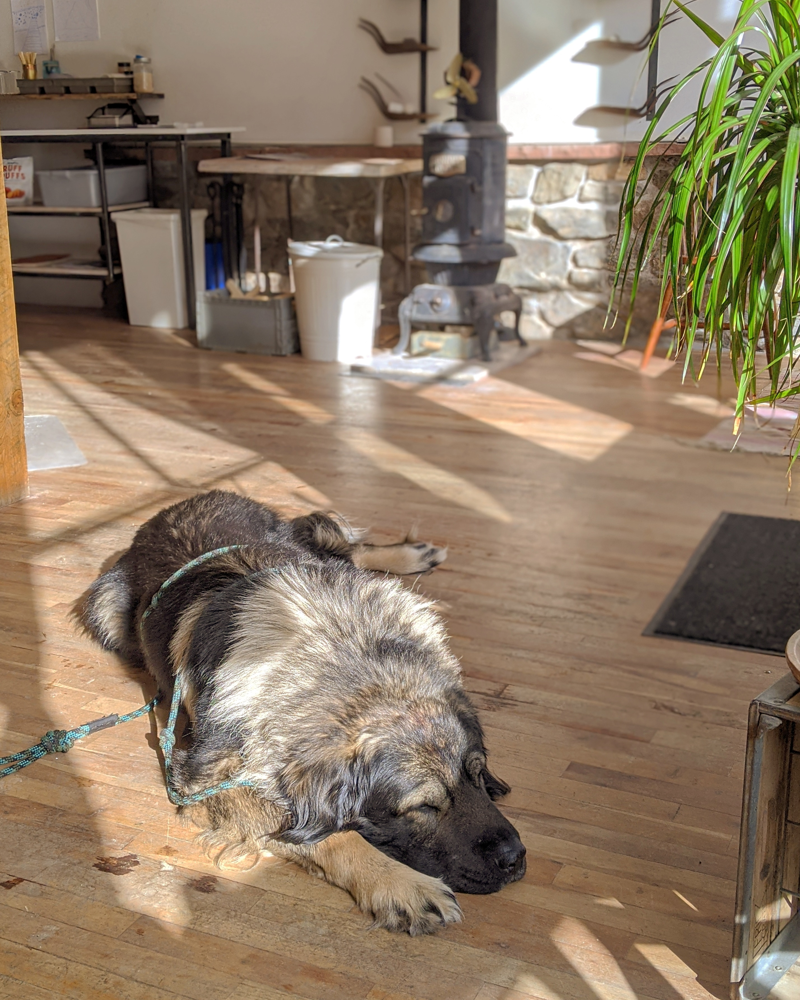
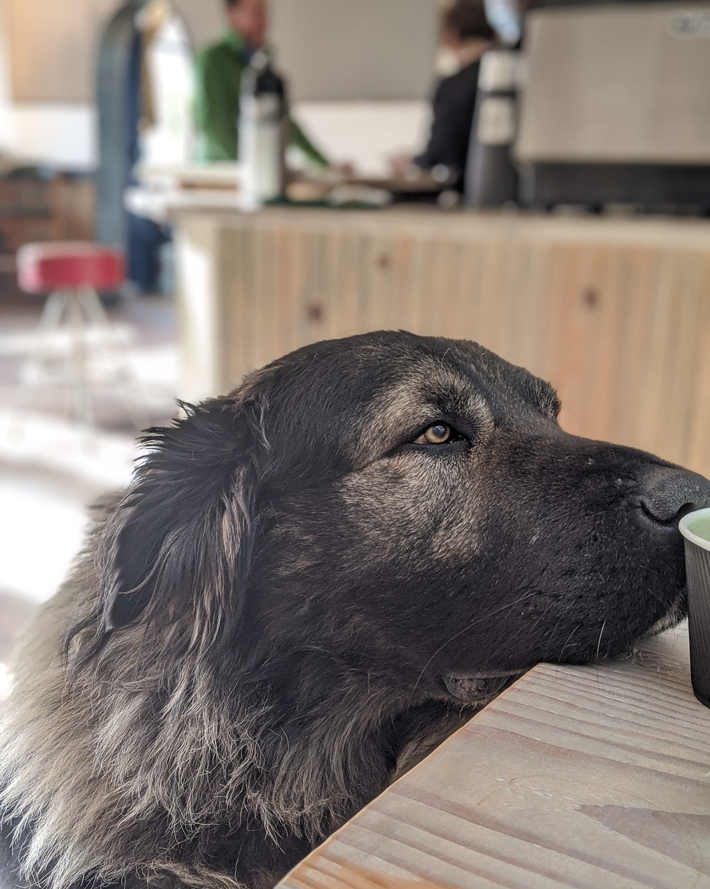

The Sarplaninac is a very special breed of canine.
Here at Desert Rose Sarplaninacs, we take pride in raising hard-working livestock guardians, as well as wonderful family companions.
As they say, if a Sarp has no flock, the flock is the family!
Explore the site to learn more about the Sarplaninac breed, our family of Sarplaninacs, or even apply for a puppy in the upcoming litter.


A little more about Lucas
Lucas was born on January 31, 2014. He was part of a litter of 8 from a little farm in Okalhoma, U.S.A. When Lucas turned 8 weeks, he met Mike, who took him home to Colorado, where they have both been enjoying their time since.